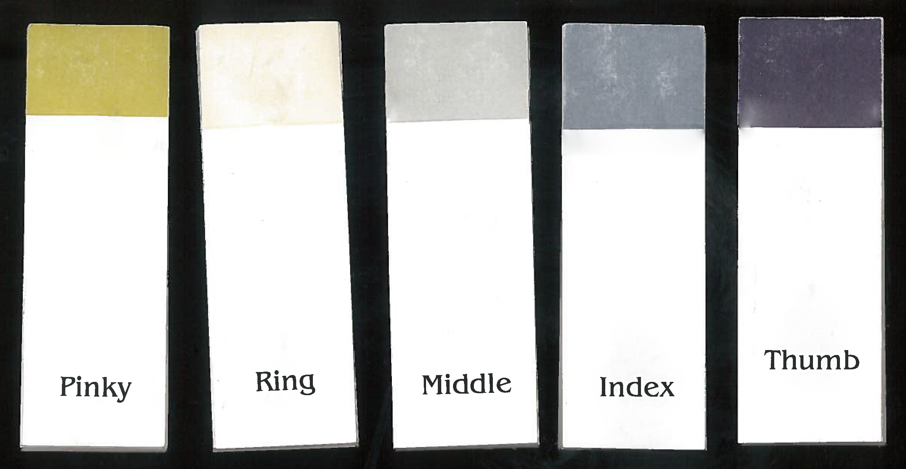
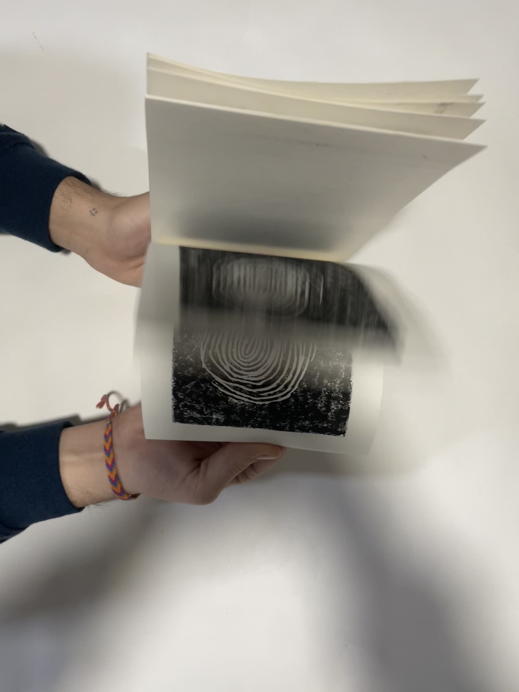

Fingerprint Flipbooks
There are many things that make us as humans unique. One of the most unique parts is that no two people will ever have the same fingerprints. I’ve created a series of fingerprint flipbooks by stamping each finger on my right hand to create these unreproducible books.


